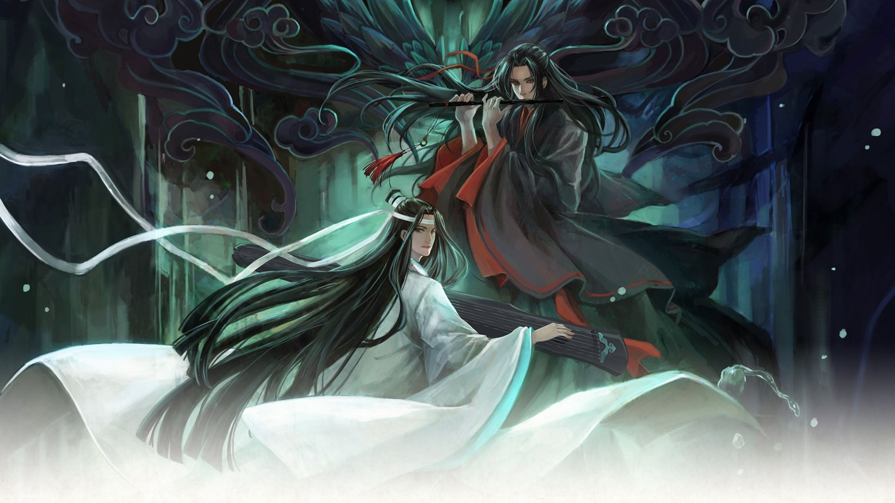
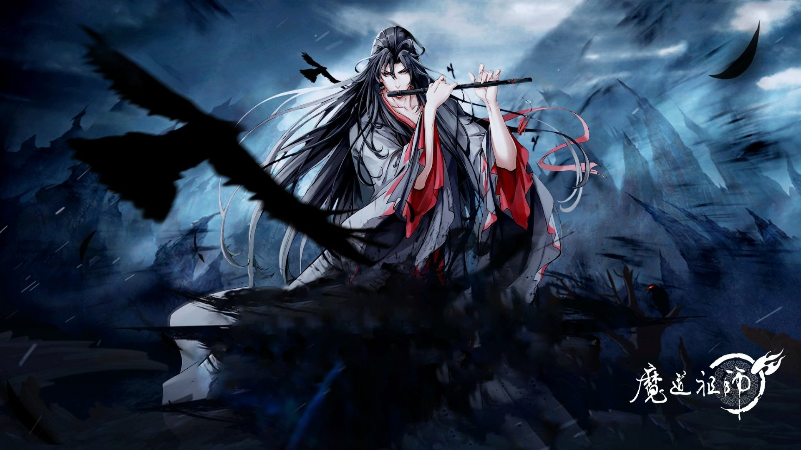

Guarulhos 08 de Março 2024

MO DAO ZU SHI é um romance chinês homosexual e ele em si é omo o grande mestre que fundou o Caminho Demoníaco, Wei Wuxian vagou pelo mundo em seus caminhos devassos, odiado por milhões pelo caos que ele criou. No final, ele foi apunhalado pelas costas por seu querido shidi e morto por clãs poderosos que se combinaram para dominá-lo. Ele encarna no corpo de um lunático que foi abandonado por seu clã e mais tarde, a contragosto, levado embora por um famoso cultivador entre os clãs – Lan Wangji, seu arqui-inimigo. Isso marca o início de uma jornada emocionante, porém hilária, de ataque a monstros, solução de mistérios e criação de filhos. A partir do flerte mútuo ao longo do caminho, Wei Wuxian lentamente percebe que Lan Wangji, uma cara que é aparentemente arrogante e indiferente, tem mais sentimentos por Wei Wuxian do que está demonstrando.
A primeira temporada foi ao ar no Tencent Video, de 9 de julho de 2018 à 6 de outubro de 2018. Em seguida, a segunda temporada foi ao ar de 3 de agosto de 2019 à 31 de agosto de 2019. Logo após, uma terceira temporada foi confirmada no episódio final da segunda temporada, e uma série chibi, (魔道 祖师 Q; Mó Dào Zǔ Shī Q) foi lançada em Julho de 2020.
Mo Dao Zu Shi (MDZS)0, ou o Grandmaster of Demonic Cultivation, é uma daquelas franquias que irá mergulhar você em um turbilhão de fan fiction sem nenhum sinal de saída. A melhor parte? Você nem vai reclamar. Mo Xiang Tong Xiu (MXTX), o criador da série, concebeu um mundo fictício que é tão detalhado que você vai sentir como se esses lugares celestiais realmente existissem. Por outro lado, seus personagens retratam as loucuras humanas de forma tão realista que você não pode deixar de duvidar da própria humanidade.
primeira temporada foi ao ar no Tencent Video, de 9 de julho de 2018 à 6 de outubro de 2018. Em seguida, a segunda temporada foi ao ar de 3 de agosto de 2019 à 31 de agosto de 2019. Logo após, uma terceira temporada foi confirmada no episódio final da segunda temporada, e uma série chibi, (魔道 祖师 Q; Mó Dào Zǔ Shī Q) foi lançada em Julho de 2020.
Mo Dao Zu Shi (MDZS), ou o Grandmaster of Demonic Cultivation, é uma daquelas franquias que irá mergulhar você em um turbilhão de fan fiction sem nenhum sinal de saída. A melhor parte? Você nem vai reclamar. Mo Xiang Tong Xiu (MXTX), o criador da série, concebeu um mundo fictício que é tão detalhado que você vai sentir como se esses lugares celestiais realmente existissem. Por outro lado, seus personagens retratam as loucuras humanas de forma tão realista que você não pode deixar de duvidar da própria humanidade.
Mo Dao Zu Shi (MDZS), ou o Grandmaster of Demonic Cultivation, é uma daquelas franquias que irá mergulhar você em um turbilhão de fan fiction sem nenhum sinal de saída. A melhor parte? Você nem vai reclamar. Mo Xiang Tong Xiu (MXTX), o criador da série, concebeu um mundo fictício que é tão detalhado que você vai sentir como se esses lugares celestiais realmente existissem. Por outro lado, seus personagens retratam as loucuras humanas de forma tão realista que você não pode deixar de duvidar da própria humanidade. MDZS começou como um romance de danmei em 2016 e, desde então, os fãs têm recebido uma grande variedade de conteúdo. Além do romance, tem manhua, drama de áudio e donghua (equivalente chinês ao anime), dos quais o donghua foi concluído, com a terceira e última temporada sendo exibida em 2021. Como os fãs não se cansavam de ação, sobrenatural e romance, os criadores decidiram lançar uma série de TV de ação ao vivo que estreou em 2019. Ela também lançou dois filmes spin-off e outra série especial de TV.Mo Dao Zu Shi (MDZS), ou o Grandmaster of Demonic Cultivation, é uma daquelas franquias que irá mergulhar você em um turbilhão de fan fiction sem nenhum sinal de saída. A melhor parte? Você nem vai reclamar. Mo Xiang Tong Xiu (MXTX), o criador da série, concebeu um mundo fictício que é tão detalhado que você vai sentir como se esses lugares celestiais realmente existissem. Por outro lado, seus personagens retratam as loucuras humanas de forma tão realista que você não pode deixar de duvidar da própria humanidade. MDZS começou como um romance de danmei em 2016 e, desde então, os fãs têm recebido uma grande variedade de conteúdo. Além do romance, tem manhua, drama de áudio e donghua (equivalente chinês ao anime), dos quais o donghua foi concluído, com a terceira e última temporada sendo exibida em 2021. Como os fãs não se cansavam de ação, sobrenatural e romance, os criadores decidiram lançar uma série de TV de ação ao vivo que estreou em 2019. Ela também lançou dois filmes spin-off e outra série especial de TV
As adaptações donghua e live-action são fortemente censuradas. Ainda assim, você deve observá-los para ver o sorriso 'mais brilhante que o sol' de Wei Wuxian e o anseio silencioso de Lan Wangji. Em seguida, você pode passar para a ação ao vivo ou para o romance em si. A ação ao vivo tem muitos elementos canônicos divergentes, então certifique-se de não ficar confuso sobre o enredo principal enquanto assiste. Ignorar o Indômito seria um erro fatal e algo que nunca recomendarei. Wang Yibo e Xiao Zhan imortalizaram seus respectivos personagens e, sem sua representação, não consigo nem imaginar Lan Wangji e Wei Wuxian. O Indômito é uma infinidade de sentimentos e emoções a serem vivenciados, e você emergirá encharcado em lágrimas e emocionalmente envolvido nos personagens. Em seguida, você pode ler o romance ou ouvir o áudio-drama, pois as histórias são as mesmas. Depois disso, o próximo passo é um mergulho profundo no mundo das fanfics MDZS, mas isso é conversa para outro dia. O romance original é definitivamente o mais sexualmente explícito. MXTX não tem medo de dar aos pombinhos o que eles merecem. O enredo principal chega ao final no capítulo 113, e outros 13 capítulos extras são adicionados, o que pode satisfazer sua fome yaoi. A próxima adaptação mais fiel é o drama de áudio que segue o romance a um T. Então, é claro, também inclui todo o conteúdo explícito. Embora o manhua tenha mostrado algumas cenas afetuosas leves, não tenho certeza de quão longe será capaz de retratar a profundidade disso. Está atualmente em andamento, então isso adiciona outra camada de dificuldade. As adaptações donghua e live-action são fortemente censuradas. Ainda assim, você deve observá-los para ver o sorriso 'mais brilhante que o sol' de Wei Wuxian e o anseio silencioso de Lan Wangji.
